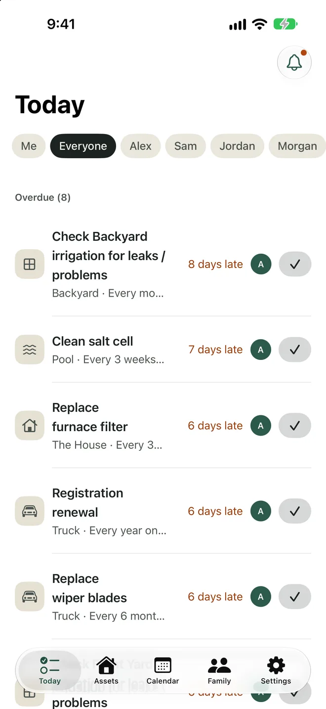
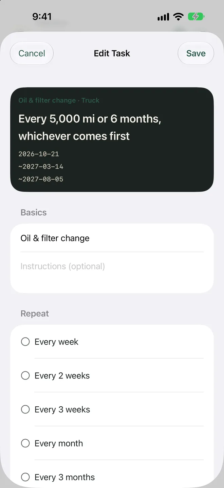
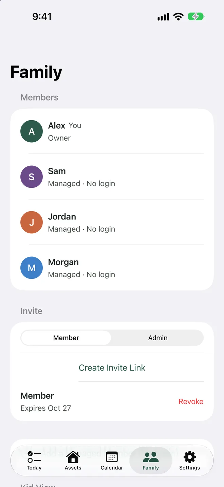
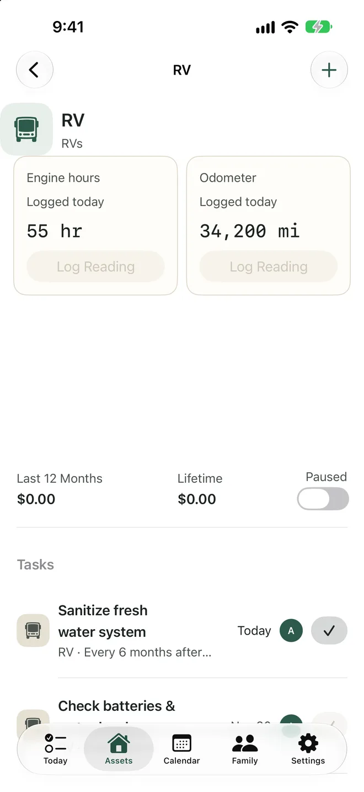
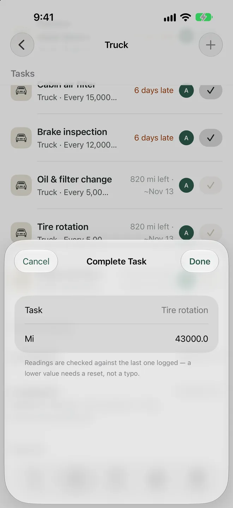
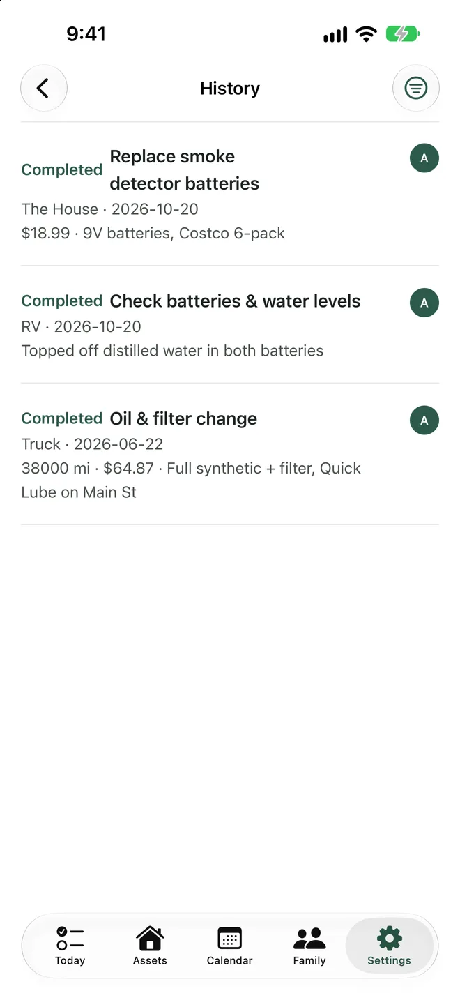
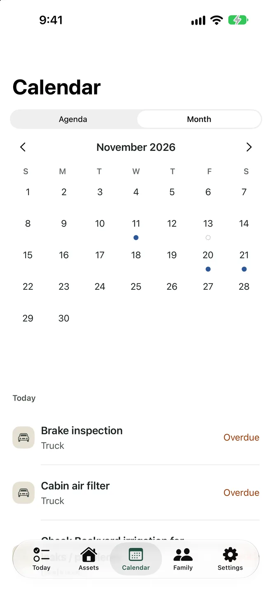
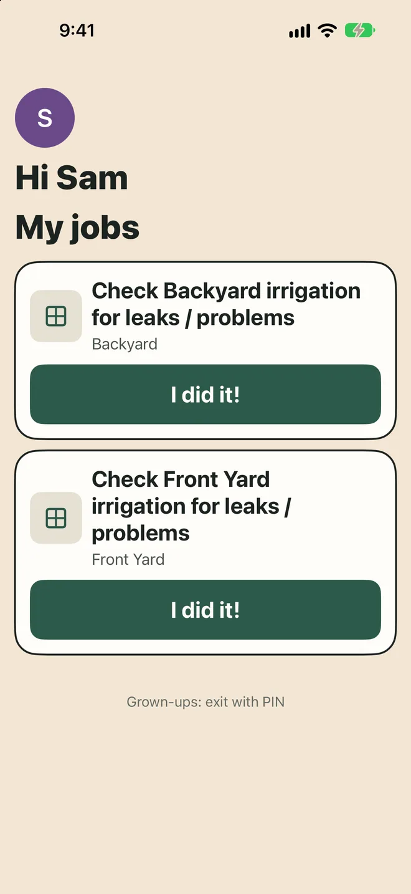
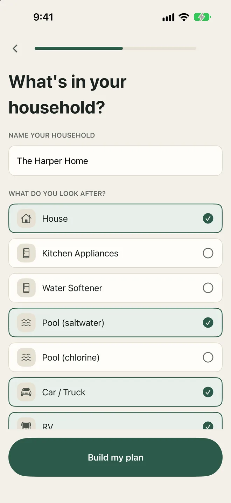

Home · Pool · Cars · RV · Generator
Everything your household maintains, on schedule.
Due and Done tracks maintenance by date, mileage or engine hours, reminds the right person when it's due, and keeps a record of every service, shared with your whole family.
Free to download, with an optional Plus upgrade for the whole family. iPhone and web. No ads, no tracking.

Schedules that match real life
Calendars only know dates. Your truck knows miles, your generator knows hours, and your pool knows what season it is.
- Every 2 weeks
- Monthly
- Every 5,000 mi
- 5,000 mi or 6 months
- Every 100 engine hours
- 1st Saturday
- Weekly in summer, biweekly in winter
- One time
Built for everything you own
One app for the house and everything parked outside it.
Home, pool, vehicles and more
The house, HVAC, pool, cars, trucks, RV, boat, generator, lawn equipment and appliances. Group things together, like an RV and its generator.
Mileage and hours, projected
Log odometer or engine-hour readings and Due and Done estimates the date a task will come due.
Templates to start fast
Pick what you have and get typical tasks right away, like oil changes, filter swaps, salt cell cleaning and roof inspections. Make every interval your own.
Reminders that get it done
Reminders before it's due and nudges while it's overdue. Mark it done, snooze it or log a reading from the notification.
Calendar and history
See the month ahead, then look back at every service with readings, costs and notes. Export it any time.
Pause for the off-season
RV in storage? Pool winterized? Pause it, and the schedule picks up where it left off.
Share the work
Invite your family with a link or QR code. Everyone sees the same list, and everyone knows whose turn it is.
Assign, rotate or share
Give a task to one person, rotate it through the family, or leave it for whoever gets there first. Swap a single week without changing the rotation, and use away mode to hand off tasks while you travel.
Kid view
Add kids without an account. Pair a tablet or phone to a simple list of their jobs, locked with a grown-up PIN, with optional parent approval before a job counts as done.
See it in action
The iPhone app, with a sample household.








Scroll for more →
Private and simple
Sign in with Apple, including Hide My Email. No ads, no analytics, no tracking, and we never sell your data. Your household's data is visible only to the people you invite, and you can delete your account at any time.
Read the Privacy Policy and Terms of Service.
Stop keeping it all in your head
Set up your household in a few minutes and let Due and Done remember the rest.